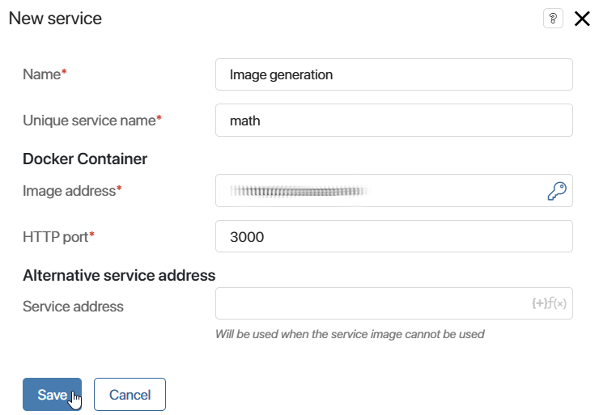
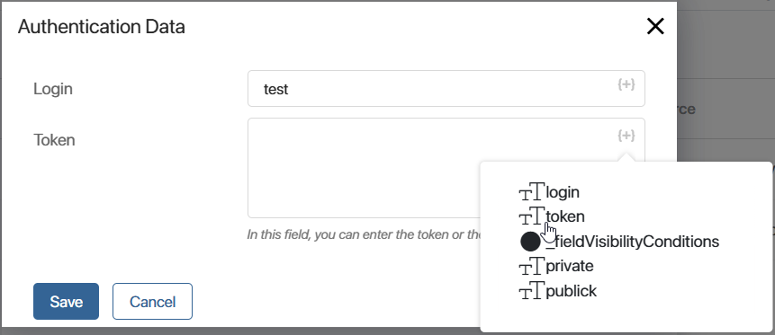
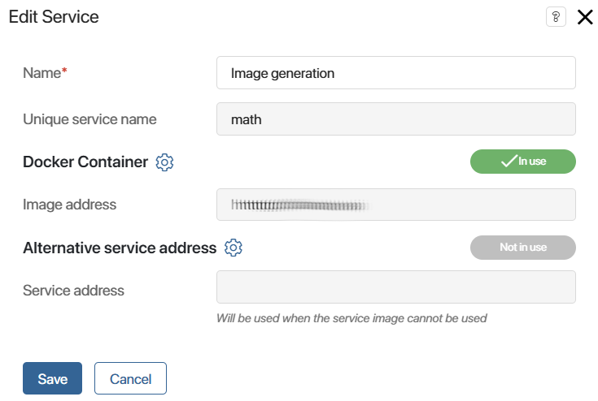
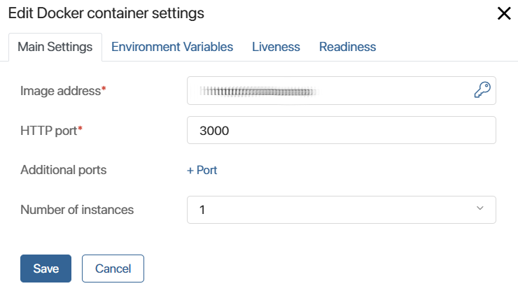
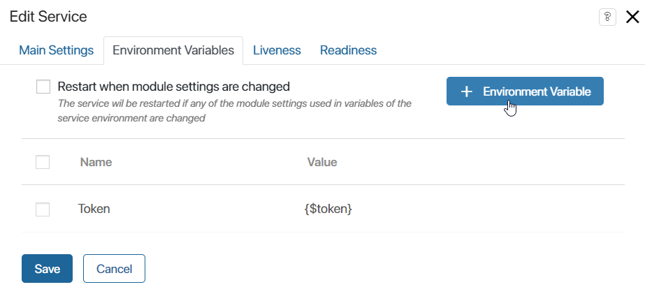
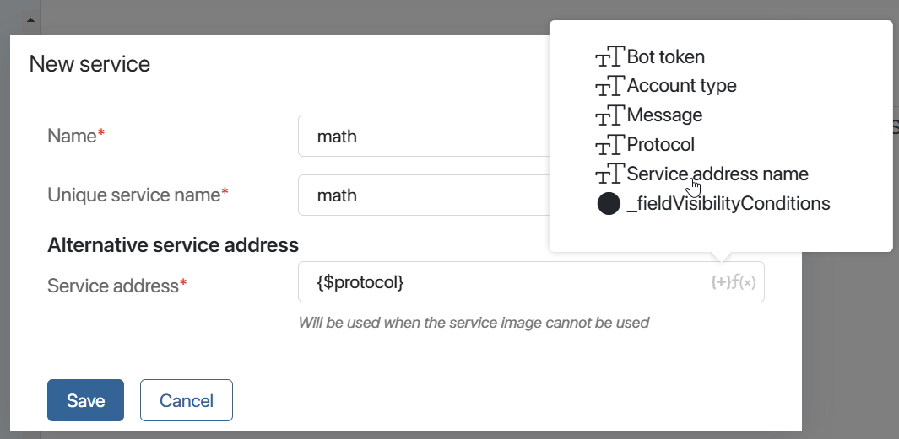
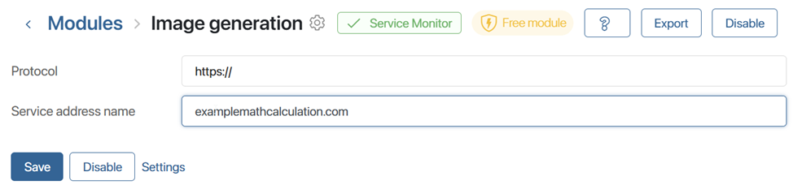
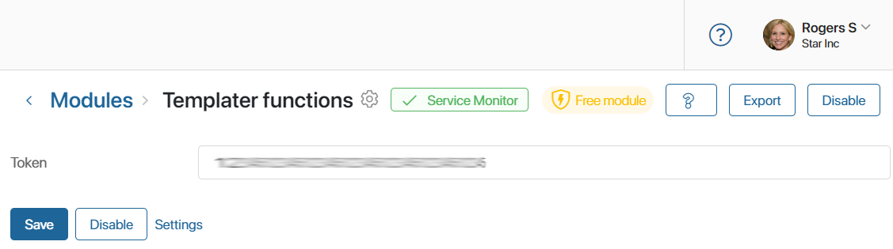

Portable services allow you to integrate microservices into custom modules, extending their functionality.
There are several ways to connect a portable service in a module. You can select the required option depending on the environment required for the microservice, as well as the BRIX version used. When creating a service, you can send to the module the following addresses:
- The address of the microservice image hosted in a public or private Docker Hub repository, its internal settings and configurations to work in the cluster. This method is used in versions that support service deployment in Kubernetes runtime environment: BRIX On‑Premises and SaaS Enterprise.
- The alternative address of the service installed on the external hosting with public access. The method is available for all versions, but it is often used in the BRIX SaaS Standard cloud edition, where you cannot use the service image.
In this article, we will look at the process of creating a service in a custom module.
Read more about the use of microservices when developing custom solutions in the following articles:
- Features of portable services and use case: Portable services in modules.
- Implementation of service connection stability probe: Example of using a Readiness probe in portable services.
- Enabling portable services in BRIX Enterprise: Enable portable services.
- Development of custom microservices: Guidelines for developing microservices for portable services.
Add and configure a portable service
- Open the page of the custom module in which you want to connect a portable service and go to Settings.
- On the Services tab, click + Service and fill in the fields in the opened window:

- Name*. Name that will be displayed in the user interface.
- Unique service name*. Name that will be used in code or scripts to access the service. It is set once when the service is created and cannot be changed later.
- Docker container. This block configures the placement of the microservice image in a separate space in the Kubernetes environment. The option is available in BRIX On‑Premises and SaaS Enterprise versions:
- Image Address*. The URL of the Docker image of the service. For an image hosted in Docker Hub, a short relative name can be specified. When authentication is required for the image, specify your login and token. To do this, click the key icon next to the field and fill out the form in one of the following ways:
- Enter the values of the login and token. When exporting the module, the specified values will be saved and openly transmitted.
- To prevent accidental leakage of authentication data when exporting the module, use template variables of the String (string) type created as parameters of module settings. To do this, click the {+} icon and select the added property.
In this case, the user specifies the login and token values on the module connection page instead of entering them directly in the Authentication Data window. When exporting and subsequently importing the module, confidential information will not be accidentally transmitted because the values of the module settings will be deleted. At the same time, the variables for the login and token will be preserved.

- HTTP port*. The port used for interaction with the microservice. The default port is 3000. When configuring, check the microservice documentation and determine which port should be selected.
- Alternative service address. This block is filled in if the microservice is hosted and operates on a third-party server with a public access address. You can specify the URL of the service in one of the following ways:
- Enter the address as a string, for example https://example.mathcalculation.com.
- Use pre-created parameters from the module settings and specify the address template. In this case, if the address components change, you will be able to edit the parameter values in the module rather than re-configure the service connection.
Please note, if both addresses are specified in BRIX On‑Premises and SaaS Enterprise versions, the image address will be used.
- Click Save.
- The Edit Service window will open where you can configure the following settings:

- Edit or add the image address and port, as well as specify additional settings for the Docker container. For example, you can set the number of microservice instances, add environment variables, configure Liveness and Readiness probes. Read more about it in the Docker container settings section.
- Edit or add the public service address by clicking the gear icon to the right of the Alternative service address field. To generate address based on the module parameters, configure the address template. Read more about it in the Template for the alternative service address section.
Docker container settings
In BRIX On-Premises and SaaS Enterprise editions, a microservice image can be placed in the Kubernetes environment. To configure settings for microservice deployment, click the gear icon to the right of the Docker container block. In the window opened, the settings are performed on the following tabs: Main Settings, Environment Variables, Liveness, Readiness.
Main Settings tab

- Image address*, HTTP port*. You can edit the image address, login and token to access the repository and the connection port specified when creating the portable service.
- Additional ports. You can specify additional ports for the microservice which will be used for connection with other module microservices. Maximum 10 additional ports are available for one microservice.
начало внимание
To specify additional ports in the portable services settings, enable the allowBabysitterOptionalPorts flag. For more information, see the Modify BRIX Enterprise parameters and Modify BRIX Standard parameters articles. If you are using SaaS Enterprise edition, please contact your manager to enable this flag.
конец внимание
- Number of instances. Specify how many microservice instances to deploy and launch. When you change the number of instances, please note that BRIX itself doesn’t support any type of service replication. If it is not incorporated in the microservice, each of the instances will be entirely separate from others.
Environment Variables tab
On this tab, you can create environment variables for the microservice image. They are used if the microservice allows configuration via environment variables. The availability of configuration can be defined in the documentation. To create a variable on the tab, click +Environment Variable and fill in the service parameter template in the opened window.

Please note that when you add or edit environment variables, the microservice is restarted.
Environment variables can be set during development, but you can also give the end user an opportunity to change them. To do that, you can create a template when filling out the value, specifying a property of the module. To do this, you can use module settings when creating a variable in a template.
For example, there is a ServiceTimeout property in the module settings. You can create an environment variable RequestTimeout and specify {$serviceTimeout} in its template. Then users will change the value of the property in the module settings and at the same time set the value for the environment variable in the microservice.
If module settings are used in the environment variables template, you can enable the Restart when module settings are changed option. In this case, when the parameter values on the main page of the module settings change, the service will be restarted, i.e., completely removed from the Kubernetes cluster and deployed again.
Liveness tab
This option allows you to use a Kubernetes probe to automatically restart a microservice in case of failure. The following options are available in the drop-down list: Command, HTTP, and TCP. Read its documentation before including Liveness probes and selecting their types.
Readiness tab
This option allows you to use a Kubernetes probe to prevent the microservice from accepting requests before it is fully initialized. The following options are available in the drop-down list: Command, HTTP, and TCP. Read its documentation before including Readiness probes and selecting their types.
Please take your time to carefully configure the parameters on the Liveness and Readiness tabs. If the settings are incorrect, and the Kubernetes response is invalid, the microservice will be considered inoperable and restarted no matter what its status actually is. We recommend avoiding probes if possible if you aren’t fully aware of why and how you need to use them and what the consequences are.
To finish configuring the added service, click Save in the editing window.
All created services will be displayed in the module settings, on the Services tab. To reopen the window of editing a service, click on its name in the list. To delete a service, select its checkbox and click the Delete button that appears in the right corner of the page.
Template for the alternative service address
The alternative service address can be specified using the module parameters. This method allows you to manage the portable service in a more flexible way. For example, you can change the address components on the module connection page.
To configure the service address template, follow these steps:
- Open the settings page of the custom module where you want to add the portable service.
- Go to the Settings tab and create properties of the String (string) type that will make up the service address. For example, it can be two parameters: to record the data transfer protocol and to specify the base address of the service.
- In the settings, when creating a service in the module, specify a template in the Service address field. To do this, click the {+} icon, select the previously created parameters, and save the settings.
 - To edit the specified address, in the service settings, click the gear icon to the right of the Alternative Service Address option. Edit the template or set a new address and save the changes.
- Save the service settings. The service address can now be specified, modified, or deleted in the enabled module settings. If the fields are empty, communication with the service is unavailable.

Enable or disable a microservice
When a module is enabled, all the microservices added to it are started. When the module is disabled, the microservices will be stopped and deleted.
If one microservice image is deployed from different modules within one company, there will be two different microservice instances.
Microservice monitor
When the module is enabled, the status of microservices added to it can be monitored on its page. To do this, the Service Monitor is displayed next to the module name.

By clicking on the button, you’ll see a list of all the microservices set by portable services. The information includes data about the image that the container is deployed from and about the number and current status of the replicas. If the Kubernetes cluster can provide metrics, data about resource consumption will also be shown.
Access to microservices
Scripts
To access microservices, you can use the API provided in scripts. It is available in server scripts and only within the module that the microservice belongs to, for example, in its widgets and business processes. Microservices cannot be accessed in client scripts.
Services can be accessed using Namespace.services. If the module doesn’t contain portable services, this namespace will not appear among the autocomplete suggestions in the script.
To access a microservice, use the fetch() method.
You can send a simple GET request without additional parameters specifying a relative path to the microservice API as the main parameter.
const res = await Namespace.services.vap.fetch("/SayHello");
if (res.ok) {
const resText = await res.text();
}
If you want to send a request of a different type, specify additional parameters, or set the request’s headers and body, use the fetch() method and pass FetchRequest as its second parameter:
const res = await Namespace.services.vap.fetch("/RememberMe", {
method: 'POST',
headers: {
Authorization: 'myToken',
},
body: JSON.stringify({
name: 'John',
age: 27,
})
} );
When writing scripts, you may need to check a microservice’s state. To do that, you can use the status() method. It will return the ServiceStatus enum value with the information about the current status.
const info = await Namespace.services.vap.status();
Communication between two portable services
In BRIX On-Premises and SaaS Enterprise editions, you can arrange communication between microservices within a module. Configure the access address using the environment variables.
Read more about it in the Guidelines for developing microservices for portable services article.
Export and import
You can only export or import a module with portable services if Portable services are unlocked.